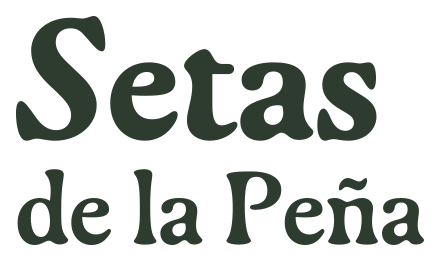

01 · Empaque culinario · Maqueta de frente y dorso, campos de lote en blanco

TENJO · CUNDINAMARCA · COLOMBIA

Shiitake
Lentinula edodes
HONGO FRESCO · PESO NETO ___ G
LÁM. III
Shiitake
Lentinula edodes
SHI-01 · BASIDIOMYCOTA · AGARICALES
Origen & Sustrato
Sustrato y procedencia según el registro de este lote. Completar solo con datos verificados.
Notas Culinarias
Aroma profundo a bosque húmedo, textura carnosa umami. Saltear con mantequilla avellanada y sal marina.
Trazabilidad de Cosecha
LOTE ____ · COSECHA __/__/____ · CONSUMIR ANTES DE __/__/____